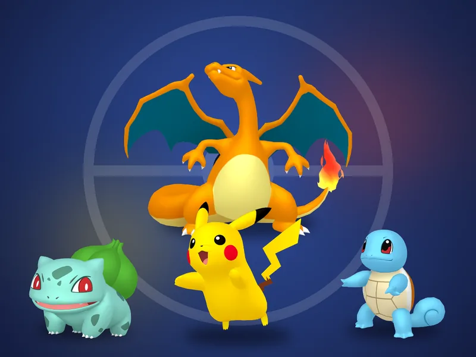

Galeria de pokémons
Todos os pokémons da PokeAPI em cards com imagem, HP, tipo, peso e altura. Busque pelo nome (ex.: pikachu) ou pelo tipo (ex.: fogo, água).
Abrir a galeriaVeja todos os pokémons da PokeAPI, pesquise pelo nome ou pelo tipo e monte a sua coleção. Ela fica salva no seu navegador.

Explore a galeria e guarde os escolhidos na sua coleção.
Todos os pokémons da PokeAPI em cards com imagem, HP, tipo, peso e altura. Busque pelo nome (ex.: pikachu) ou pelo tipo (ex.: fogo, água).
Abrir a galeriaGostou de um pokémon? Clique em Favoritar no card e ele entra na sua coleção. O contador no topo do site mostra quantos você já tem.
Na página Favoritos os escolhidos ficam reunidos como em um carrinho de compras, com as médias de peso, altura e HP e a lista dos tipos.
Ver favoritos